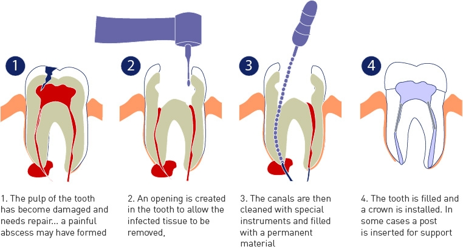

Root canal treatment is used to save teeth which would otherwise need to be removed. It is needed when the blood or nerve supply of the tooth (known as the pulp) is infected through decay or injury: “Sometimes, due to trauma or decay the “nerve” inside the tooth dies off. Any passing bacteria find this a source of nourishment and proceed to munch on the dead nerve and have lots of babies .Your body can’t do anything about this infection because along with the nerve dying, the blood supply to the tooth dies off too, so the body can’t send in some antibacterial cells (white blood cells) to attack the bugs. Eventually, the bugs start to spill out of the tooth and into the tiny space between the tooth and the jawbone. This battle rages on for a while and because the area is very tiny, the pressure becomes high and it becomes extremely painful. Anyway, to sort this mess out, the dentist has two choices, extract the tooth and remove the bugs that way or do a root treatment. In a root treatment the inside of the tooth is cleaned and sterilised and then a plug is put in to bung up the space inside the tooth and stop more bugs getting in.”
Step-1: Clean the tooth from the inside and remove all the infected nerve tissue
Step-2: Sterilization of the inside of the tooth
Step-3: A filling is placed inside the tooth extending upto the root tip
Step-4: Measurements of a cap is taken
Step-5: A Cap is placed over the damaged tooth.
During the battle between the infection and the team (patient, tooth and the dentist), the remainant part of the tooth is weak and brittle and is not strong enough to withstand the chewing load. The tooth is provided all its strength by a protective layer (Cap) which ensures a good function thereafter.
